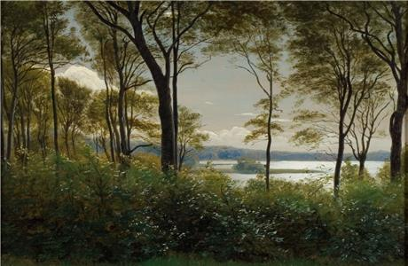
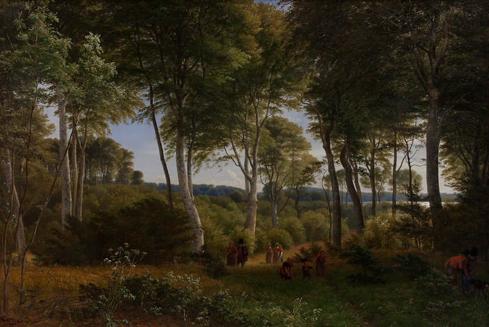

Den smukke natur omkring Skarresø har tiltrukket mange kunstnere og flere af guldaldermalerne, bl.a. J. T. Lundbye og P. C. Skovgaard, fandt motiver ved Skarresø.
Her kan man se et af P. C. Skovgaards malerier:
Udsigt over Skarresø, P. C. Skovgaard, 1845
I Delhoved Skov kan man også se udover den smukke sø og dens natur.
Her er et andet af P. C. Skovgaards værker, malet netop i denne skov.
Parti af Delhoved Skov ved Skarre Sø, P. C. Skovgaard, 1847